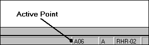

Understanding the Active Point
After defining and inserting a segment, you’ll notice that a small crosshair appears in the drawing area. This crosshair represents the currently active point. The active point is also displayed in the status area immediately below the drawing area.

When placing components, you should remain aware of the active point. After selecting a component type for insertion, AutoPIPE will automatically assume that you want the starting point of the component to be inserted at the active point. By default, AutoPIPE will increment the point to the next value and concatenate this with the letter that defines the current segment. For example, if you are inserting a run point on Segment A that contains nothing but an anchor point, the Run Point dialog will contain the value A01 in the Name of Point field.
To designate an existing point as the active point, simply click on it with the mouse. The crosshairs should redisplay over that point and the Active Point status area should reflect the new point as well. In a complex model, you can click on the Home > Operations > Goto Point button and type in your desired active point location. You can also use the arrow keys to control the location of the active point as described below.
It is important to note that a given point may have two or more different segments. For example, in Figure 2- 1, point A03 is a tee connection point, and is made up of point A03 segment A and point A03 segment B. The active point name and segment location is displayed in the bottom right hand corner of your screen. In order to toggle between multiple segments on the same Point location, it is usually more convenient to use the up and down arrow keys (see following section on keyboard commands).
Controlling the Active Point with the Keyboard
As an alternative to the mouse, the “Active Point” crosshairs can be controlled using the keyboard.
| KEY | TASK |
| | Move to the next point in the current segment (forward segment direction). |
| | Move to the previous point in the current segment (backward segment direction). |
| | When at a segment junction, move to the next segment that connects to the current point (more than 2 segments are possible). |
| KEY | TASK |
| | When at a segment junction, move to the previous segment that connects to the current point (more than 2 segments are possible). |
| Move to the first point of the next segment. | |
| Move to the last point of the previous segment. | |
| Move to the next intermediate soil point for the current soil region. | |
| Move to the previous intermediate soil point for the current soil region. |